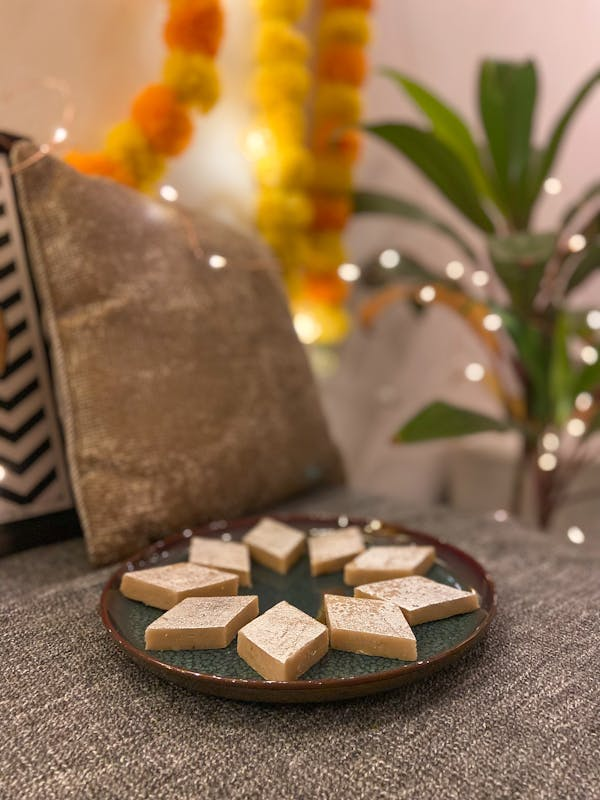

Gulab Jamun
Ingredients:
- Sugar
- Milk
- Bread
- Oil
Recipe:
- Make Dough: Mix 1 cup milk powder, 1/4 cup flour,
1/4 tsp baking soda,2 tbsp ghee, and 2-3 tbsp milk. Rest for 10 minutes. - Shape Balls: Form smooth, crack-free balls from the dough.
- Fry Balls: Deep fry until golden brown. Drain excess oil.
- Make Syrup & Soak: Boil 1 cup sugar, 1 cup water, cardamom
Add saffron (optional) and rose water. Soak fried balls in syrup for 30 minutes.

Kaju Barfii
Ingredients:
- Sugar
- Cashew nuts
- Saffron threads
- Ghee
Recipe:
- Grind Cashews: Grind 2 cups of cashews into a fine powder.
- Make Dough:Cook cashew powder with 1 cup sugar and 1/2 cup
water until it forms a dough.Add 1 tbsp ghee and mix well.. - Roll & Flatten: Roll the dough between parchment paper until 1/4 inch thick.
- Cut & Cool: Cut into diamond shapes and let cool before serving.

Samosa
Ingredients:
- Miada
- Potatos
- Green Chillis,Ginger,Cumin Seeds,Green peas
- Oil
- Water
Recipe
- Make Dough: Mix 2 cups flour, 1/4 cup oil, and water
to form a stiff dough. Rest for 30 minutes. - Prepare Filling: Cook 2 cups mashed potatoes with peas,
spices (cumin, coriander, garam masala), and salt. - Shape & Fill: Roll dough into circles, cut in half,
form cones, and fill with potato mixture. - Fry Samosas: Deep fry in hot oil until golden
brown. Drain excess oil and serve.

Pani Puri
Ingredients:
- Semolina
- Maida
- Salt
- water
- Mint leaves,Coriander leaves
- Green Chillis,Ginger
- Oil
- Chaat Masala
Recipe
- Prepare Puris:Buy or make puris by frying small, flat discs
of semolina dough until puffed and crispy. - Make Pani: Blend mint, coriander, green chilies,tamarind, and spices
with water to make spicy, tangy water. Chill. - Prepare Filling: Mix boiled potatoes, chickpeas, onions, and spices.
- Assemble & Serve: Poke a hole in each puri, fill with the potato
mixture, and add spicy water. Serve immediately..
Masala Dosa
Ingredients:
- Rice,Urad dal,Chana dal
- Fenugreek seeds,Poha
- Potatos,Onions,ginger,Green Chillis
- Oil or Ghee
Recipe
- Prepare Batter: Soak 1 cup rice and 1/2 cup urad dal
for 6 hours. Grind into a smooth batter, ferment overnight. - Make Potato Filling: Cook mashed potatoes with onions,
mustard seeds,turmeric, curry leaves, and green chilies. - Cook Dosas: Spread a ladle of batter thinly on a hot,
greased pan. Cook until crisp. - Fill & Serve: Place potato filling in the center of the
dosa, fold, and serve with chutney and sambar.

Biryani
Ingredients:
- Rice,onions,tomatoes, yogurt
- Water,Bay leaves,Cloves,Salt
- Chiken,Yougurt,Ginger,Galric,Lemon
- Oil
Recipe
- Cook Rice: Parboil 2 cups of basmati rice
with whole spices (bay leaf, cloves, cardamom). - Prepare Meat/Veggies: Cook meat or vegetables with onions,
tomatoes, yogurt, and biryani spices until tender. - Layer: In a pot, layer the meat/veggies and rice, adding
saffron milk, fried onions, and fresh herbs between layers. - Dum Cook: Seal the pot with dough or foil,
cook on low heat for 20-30 minutes. Serve hot..